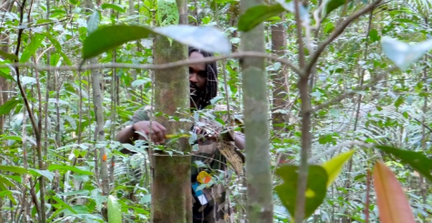
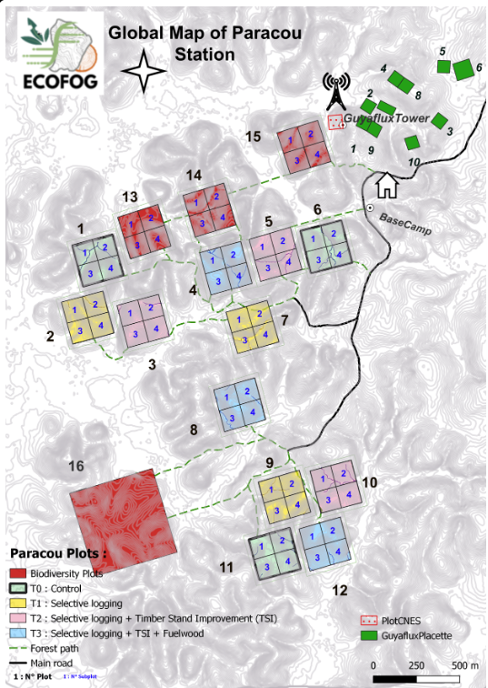
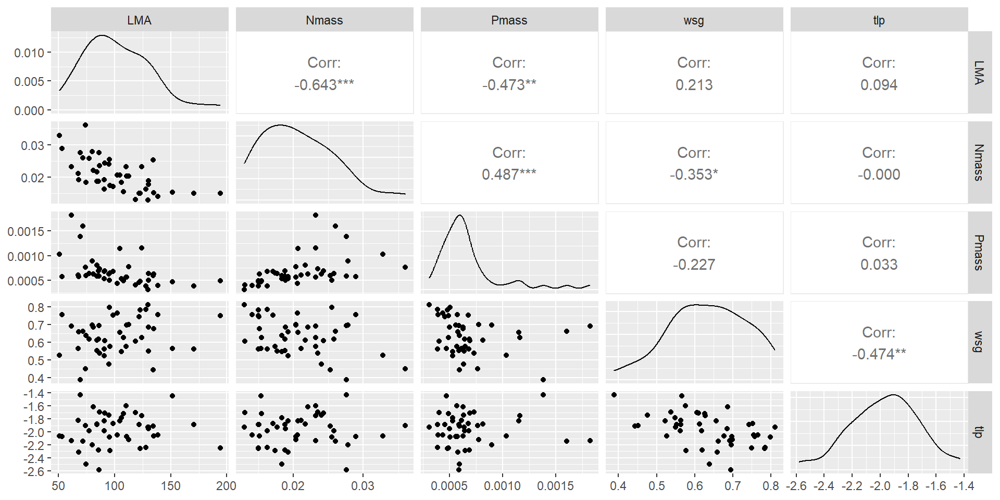
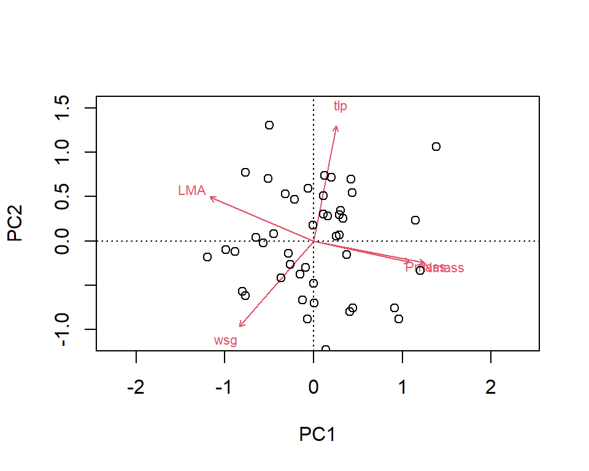
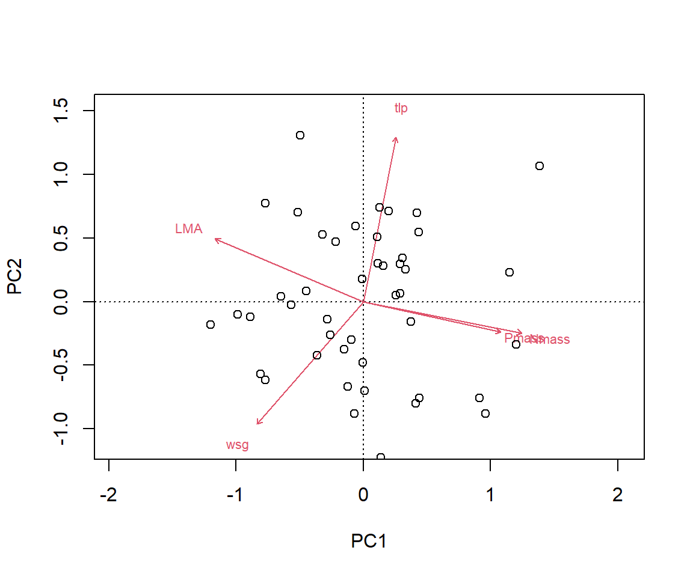
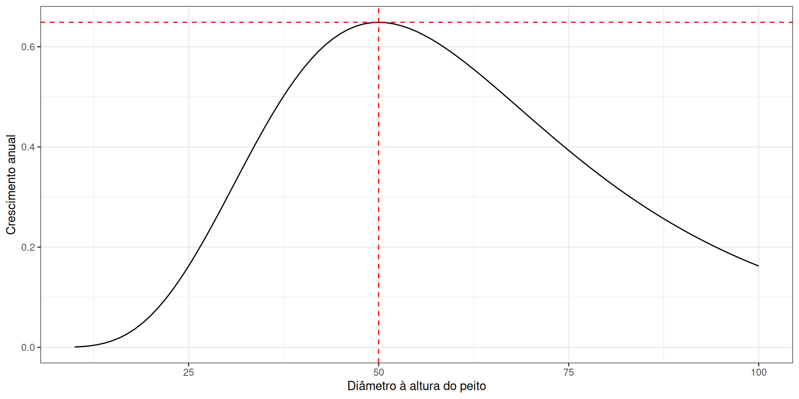
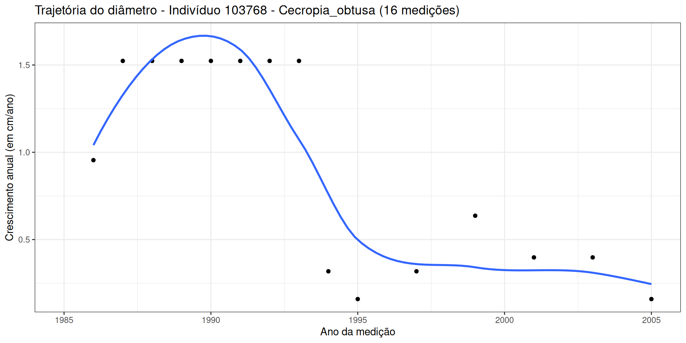

Cirad
2025-11-07
Dados de uma parcela permanente (parcela 6) na estação de pesquisa florestal de Paracou na Guiana Francesa
Todas as árvores com um diâmetro à altura do peito (DAP) ≥ 10 cm são mapeadas, identificadas botanicamente e medidas em cada censo


# A tibble: 127,732 × 13
Forest Plot PlotArea SubPlot idTree Xutm Yutm Family Genus Species
<chr> <dbl> <dbl> <dbl> <dbl> <dbl> <dbl> <chr> <chr> <chr>
1 Paracou 6 6.25 1 100621 286421. 583171. Euphorbi… Sand… guyane…
2 Paracou 6 6.25 1 100621 286421. 583171. Euphorbi… Sand… guyane…
3 Paracou 6 6.25 1 100621 286421. 583171. Euphorbi… Sand… guyane…
4 Paracou 6 6.25 1 100621 286421. 583171. Euphorbi… Sand… guyane…
5 Paracou 6 6.25 1 100621 286421. 583171. Euphorbi… Sand… guyane…
6 Paracou 6 6.25 1 100621 286421. 583171. Euphorbi… Sand… guyane…
7 Paracou 6 6.25 1 100621 286421. 583171. Euphorbi… Sand… guyane…
8 Paracou 6 6.25 1 100621 286421. 583171. Euphorbi… Sand… guyane…
9 Paracou 6 6.25 1 100621 286421. 583171. Euphorbi… Sand… guyane…
10 Paracou 6 6.25 1 100621 286421. 583171. Euphorbi… Sand… guyane…
# ℹ 127,722 more rows
# ℹ 3 more variables: CensusYear <dbl>, CodeAlive <dbl>, CircCorr <dbl>⚠️ Esses dados NÃO são de acesso livre, por favor, não os distribua nem utilize para qualquer outro fim.
Esses dados contêm:
Forest: Nome da floresta
Plot: Número da parcela
PlotArea: Área da parcela (hectares)
SubPlot: Número da subparcela
idTree: Identificador único da árvore no banco de dados
Xutm e Yutm: Coordenadas da árvore (UTM 22N (EPSG: 32 622))
Family
Genus
Species
CensusYear: Ano da medição
CodeAlive: A árvore está viva (1) ou morta (0)?
CircCorr: Circunferência (cm) da árvore no ponto de medição
Vamos usar os dados das características funcionais das árvores da Guiana Francesa obtidos na base de dados TRY e compilados no pacote rcontroll.
Esses dados estão disponíveis aqui.
# A tibble: 45 × 9
species LMA Nmass Pmass wsg dbhmax hmax ah tlp
<chr> <dbl> <dbl> <dbl> <dbl> <dbl> <dbl> <dbl> <dbl>
1 Abarema_jupunba 110. 0.0232 5.7 e-4 0.576 0.66 50.9 0.308 -1.60
2 Bocoa_prouacensis 95.6 0.0255 5.05e-4 0.798 0.4 47.9 0.251 -2.08
3 Brosimum_rubescens 85.8 0.0188 6.88e-4 0.619 0.52 50.9 0.308 -2.28
4 Carapa_procera 130. 0.0177 6.36e-4 0.55 0.49 41.4 0.187 -1.93
5 Caryocar_glabrum 84.2 0.0217 8.13e-4 0.612 1.15 48.6 0.275 -1.88
6 Cecropia_obtusa 69.5 0.0276 1.38e-3 0.388 0.35 50.9 0.308 -1.43
7 Chrysophyllum_sanguinole… 151. 0.0154 4.69e-4 0.566 0.67 50.9 0.308 -1.45
8 Conceveiba_guianensis 86.7 0.0235 7.30e-4 0.537 0.23 33.3 0.16 -1.70
9 Cordia_sagotii 134. 0.0253 5.92e-4 0.443 0.47 36.4 0.139 -1.91
10 Couepia_bracteosa 123. 0.015 4.82e-4 0.784 0.45 50.9 0.308 -2.26
# ℹ 35 more rowsEsses dados contêm os valores de 11 características funcionais para 45 espécies. Vamos focar nos seguintes características:
massa foliar por área (LMA, em \(g~m^{-2}\))
massa de nitrogênio foliar (Nmass, em \(g~g^{-1}\))
massa de fósforo foliar (Pmass, em \(g~g^{-1}\))
gravidade específica da madeira (wsg, em \(g~cm^{-3}\))
potencial hídrico foliar no ponto de perda de turgor (tlp, em \(MPa\))
# A tibble: 5 × 6
species LMA Nmass Pmass wsg tlp
<chr> <dbl> <dbl> <dbl> <dbl> <dbl>
1 Abarema_jupunba 110. 0.0232 0.00057 0.576 -1.60
2 Bocoa_prouacensis 95.6 0.0255 0.000505 0.798 -2.08
3 Brosimum_rubescens 85.8 0.0188 0.000688 0.619 -2.28
4 Carapa_procera 130. 0.0177 0.000636 0.55 -1.93
5 Caryocar_glabrum 84.2 0.0217 0.000813 0.612 -1.88
\[CV = \frac{\sigma}{\mu}\]
# A tibble: 1 × 5
LMA Nmass Pmass wsg tlp
<dbl> <dbl> <dbl> <dbl> <dbl>
1 0.295 0.253 0.455 0.161 0.127
Análise de componentes principais
Call:
pca(X = ., scale = TRUE)
Partitioning of correlations:
Inertia Proportion
Total 5 1
Unconstrained 5 1
Eigenvalues, and their contribution to the correlations
Importance of components:
PC1 PC2 PC3 PC4 PC5
Eigenvalue 2.2584 1.3822 0.5916 0.43239 0.33541
Proportion Explained 0.4517 0.2764 0.1183 0.08648 0.06708
Cumulative Proportion 0.4517 0.7281 0.8464 0.93292 1.00000
Axe 1: espectro econômico das folhas: estratégias de aquisição de recursos conservadoras (lentas) versus aquisitivas (rápidas) Wright et al 2004
As características da madeira Baraloto et al 2010 e as características relacionadas com a água Maréchaux et al 2019 são independentes do espectro econômico das folhas.
[1] 4262# A tibble: 5 × 2
CensusYear PrevYear
<dbl> <dbl>
1 1984 NA
2 1985 1984
3 1986 1985
4 1987 1986
5 1988 1987# A tibble: 15 × 4
idTree CensusYear DBH Growth
<dbl> <dbl> <dbl> <dbl>
1 100621 1984 12.7 NA
2 100621 1985 12.7 0
3 100621 1986 12.7 0
4 100621 1987 12.9 0.159
5 100621 1988 12.9 0
6 100621 1989 13.2 0.318
7 100621 1990 12.9 -0.318
8 100621 1991 12.9 0
9 100621 1992 12.9 0
10 100621 1993 13.1 0.159
11 100621 1994 13.2 0.159
12 100621 1995 13.1 -0.159
13 100621 1997 13.1 0
14 100621 1999 13.2 0.0796
15 100621 2001 13.2 0 plot_traj_DBH <- function(id, dt) {
sp <- dt %>% filter(idTree == id) %>% distinct(GenSp) # especie
n <- dt %>% filter(idTree == id) %>% count() # medições
filter(dt, idTree == id) %>%
ggplot(aes(x=CensusYear, y = DBH)) +
geom_point() +
geom_smooth(method = "loess", se = FALSE) +
labs(x = "Ano da medição",
y = "Diâmetro à altura do peito (em cm)",
title = paste0("Trajetória do diâmetro - Indivíduo ", id,
" - ", sp, " (", n, " medições)")) + theme_bw()
}
plot_traj_DBH(id = "103768", dt = dt_P6)
plot_traj_Growth <- function(id, dt) {
sp <- dt %>% filter(idTree == id) %>% distinct(GenSp) # especie
n <- dt %>% filter(idTree == id) %>% count() # medições
filter(dt, idTree == id) %>%
ggplot(aes(x=CensusYear, y = Growth)) +
geom_point() +
geom_smooth(method = "loess", se = FALSE) +
labs(x = "Ano da medição",
y = "Crescimento anual (em cm/ano)",
title = paste0("Trajetória do diâmetro - Indivíduo ", id,
" - ", sp, " (", n, " medições)")) + theme_bw()
}
plot_traj_Growth(id = "103768", dt = dt_P6)
!! en fonction de ce qu’on fait pour le paramètre individuel, il faudra peut-être faire un subset des individus avec assez de census (a rajouter dans prep de données)
modèle de Canham avec brms avec (à tester) paramètres à l’espèce + 1 effet indiv aléatoire additif?
avec brms
sur environ 3 espcèes contrastées et si possible présente à Tapajos
repartir des gmax de Ecology Letters et faire un lm en frequentiste => cf exam Géraldine